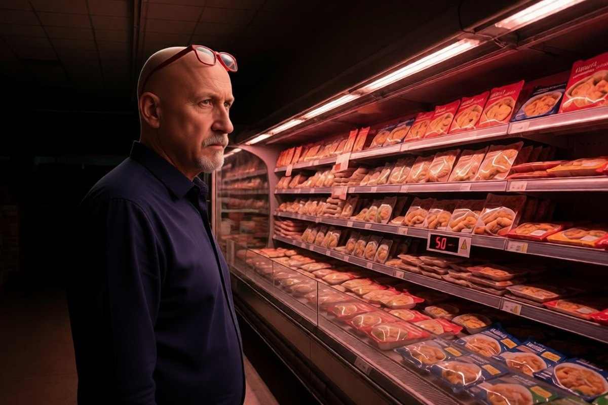

Cronaca · 3 novembre 2026
Frigoriferi dei supermercati portati a 50 gradi: colpita anche l'Italia

Temperature alzate da remoto nei banchi frigo di alcuni punti vendita in Sicilia, poi segnalazioni in Toscana ed Emilia. Nessun riscatto chiesto: due gruppi filorussi hanno rivendicato gli attacchi.
di Franco Zanghì
Nei banchi frigo di alcuni supermercati i parametri della temperatura sono stati cambiati da remoto, fino a valori che all'estero hanno toccato i 50 gradi. Il risultato è merce da buttare. Nessuno, nelle prime ore, ha chiesto un riscatto: è questo che ha fatto guardare subito oltre la criminalità comune.
Che cosa è accaduto in Italia
Il primo caso raccontato è quello di un punto vendita di Catania: lunedì, verso le quattro del mattino, a negozio chiuso, i parametri della refrigerazione vengono modificati. All'arrivo dei dipendenti la merce è compromessa.
Giuseppe Spadaro, direttore generale del gruppo che gestisce in franchising i punti vendita a marchio Coop coinvolti, ha dichiarato all'Adnkronos di avere avuto conferma di un attacco informatico in almeno quattro supermercati Coop in Sicilia, e di aver contattato l'Agenzia per la cybersicurezza nazionale attivando i protocolli. La stessa Adnkronos scrive che i guasti si sono registrati in sei punti vendita nell'isola: i due numeri non coincidono e vengono riportati come li riferiscono le rispettive fonti. Coop precisa che nella rete a gestione diretta non si registrano anomalie.
Giovanni Arena, delegato di Federdistribuzione per la Sicilia, ha parlato di una ventina di punti vendita interessati e ha spiegato la via d'ingresso: i sistemi di telegestione e controllo a distanza degli impianti di refrigerazione, quelli che le ditte di manutenzione usano per sorvegliare i frigoriferi. Sono stati colpiti, secondo la sua ricostruzione, gli esercizi che non avevano seguito i protocolli di sicurezza.
Fuori dalla Sicilia, l'Agenzia per la cybersicurezza nazionale ha ricevuto la notifica di un attacco da un'azienda toscana della ristorazione collettiva e ne ha individuato un altro, non notificato, contro un'impresa emiliana di surgelati. La Polizia postale parla di incidenti che hanno riguardato imprese di almeno tre regioni.
L'Europa
Nella stessa notte sono stati colpiti punti vendita in Belgio, Svezia, Irlanda, Lussemburgo, Estonia, Olanda e Finlandia; in Francia era già avvenuto il 12 ottobre, con tonnellate di prodotti distrutti. In Belgio la Procura federale ha aperto un'indagine. Nel Regno Unito il National Cyber Security Centre ha riferito di un impatto minimo sull'industria della lavorazione della carne. In Germania è stato colpito un supermercato in Renania Settentrionale-Vestfalia, dove la responsabile dell'ente che lo gestisce ritiene che il vero obiettivo fosse l'azienda incaricata della manutenzione a distanza.
Il commissario europeo all'Agricoltura, Christophe Hansen, ha parlato di un tentativo deliberato di interrompere la catena di approvvigionamento alimentare e di minare la fiducia dei consumatori.
La risposta dello Stato
Il 3 novembre a Palazzo Chigi si è tenuta una riunione con il sottosegretario Alfredo Mantovano, il ministro dell'Agricoltura Francesco Lollobrigida, il direttore dell'Agenzia per la cybersicurezza nazionale e i direttori delle agenzie di intelligence. Il governo ha indicato quattro direttrici: monitoraggio della minaccia, interlocuzione con fornitori e venditori, individuazione e notifica dei soggetti esposti, comunicazioni preventive e indicazioni di mitigazione.
Nella stessa nota il governo sostiene che l'impatto in Italia è al momento fortemente limitato, con poche unità commerciali interessate a fronte delle migliaia presenti sul territorio, e che gli esercizi colpiti avevano sistemi di sicurezza obsoleti, con interfacce esposte direttamente su internet e carenze nei meccanismi di autenticazione. Conclude che non sussiste alcun allarme ma permane la massima attenzione.
Indaga la Polizia postale. Il Copasir, il comitato parlamentare che controlla i servizi, ha calendariato le audizioni del direttore dell'Aisi, Bruno Valensise, e del direttore generale dell'Agenzia per la cybersicurezza nazionale, Andrea Quacivi.
La rivendicazione
Il 4 novembre l'Adnkronos riferisce che con un video sui social gli attivisti filorussi di NoName057(16), in collaborazione con il gruppo Zpentest, hanno rivendicato gli attacchi alla catena del freddo. Resta il dato di partenza: nessuna richiesta di denaro. Una rivendicazione, però, non è un accertamento, e sull'attendibilità di quel video non risultano al momento valutazioni ufficiali.
Il punto
Da tempo il ministro della Difesa Guido Crosetto ripete che gli attacchi informatici sono quotidiani e appartengono a un conflitto che non si combatte con i mezzi corazzati ma con la paura e la disinformazione. Per anni l'argomento è stato trattato come una esagerazione; oggi è arrivato nel reparto surgelati, che è il posto più banale e per questo più efficace per far capire a un paese che è esposto.
Muovere subito intelligence e cybersicurezza è la cosa giusta, e averlo fatto in 48 ore va riconosciuto. Ma la parte che lo Stato non può fare sta altrove: un impianto collegato a internet con una password mai cambiata e un'interfaccia aperta è una porta lasciata socchiusa, e a chiuderla non serve un esercito.
Chi c'è dietro lo diranno le indagini, e qui non si anticipa. Una cosa però si può dire adesso: per spaventare un paese non servono le bombe, basta un frigorifero.
Fonti
- Adnkronos, Paola Lalli, «Supermercati hackerati, il vertice a Palazzo Chigi e gli accertamenti della Polizia postale», 3 novembre 2026
- Adnkronos, «Attacchi hacker ai supermercati, due gruppi filorussi rivendicano su social», 4 novembre 2026
- Ansa, «Supermercati sotto attacco hacker anche in Italia, riunione a Palazzo Chigi con l'intelligence», 2 novembre 2026
- Open, «L'indagine sui supermercati sotto attacco in Sicilia, Emilia-Romagna e Toscana», 3 novembre 2026
- Sky TG24, «Attacchi hacker ai supermercati in Europa, anomalie anche in Italia», 3 novembre 2026
- Il Fatto Quotidiano, «Attacchi hacker ai supermercati in tutta Europa», 2 novembre 2026
Vicenda in evoluzione: i dati sono aggiornati alla sera del 4 novembre 2026. Il numero dei punti vendita colpiti varia secondo le fonti (almeno quattro secondo il gestore, sei secondo l'Adnkronos, una ventina secondo Federdistribuzione). La rivendicazione dei due gruppi filorussi non risulta verificata dalle autorità.